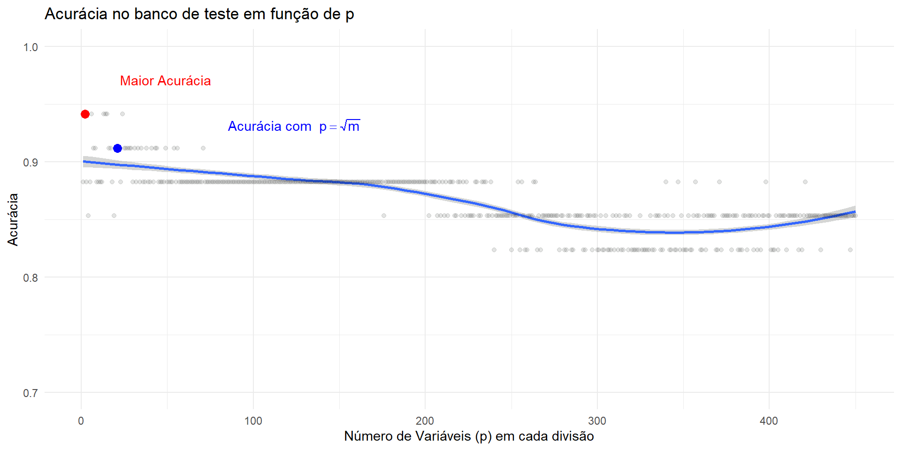
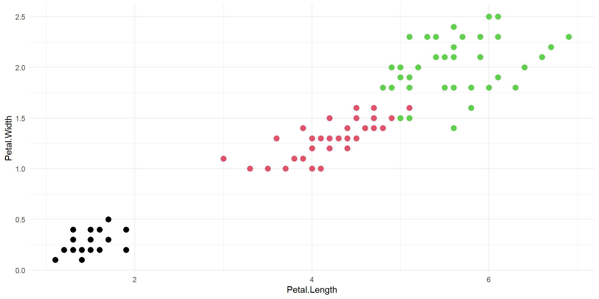
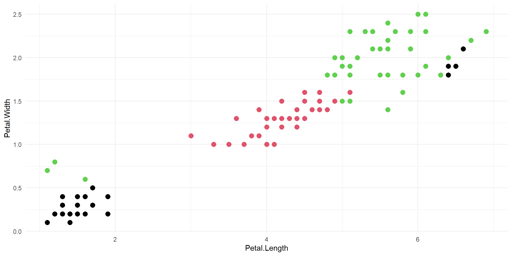
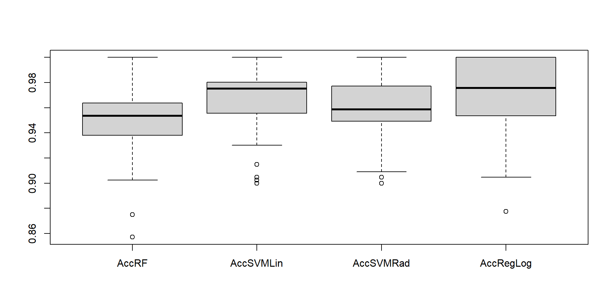
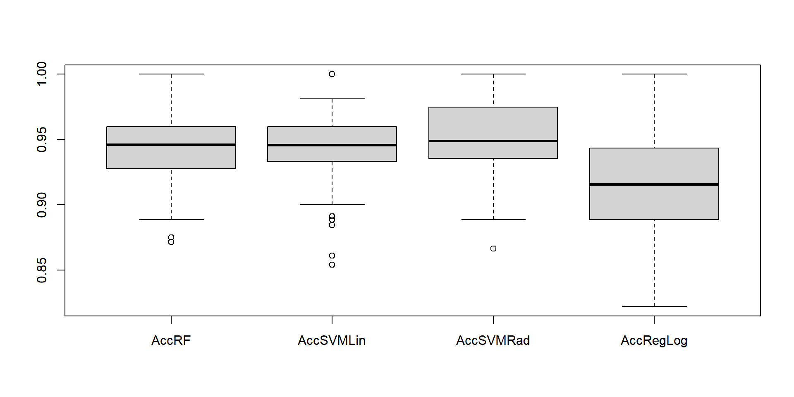
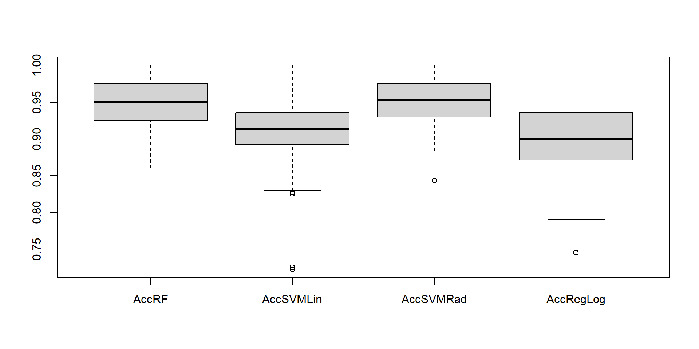
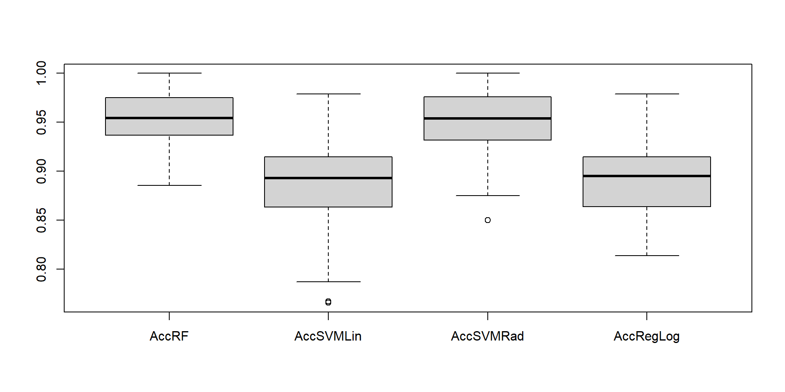
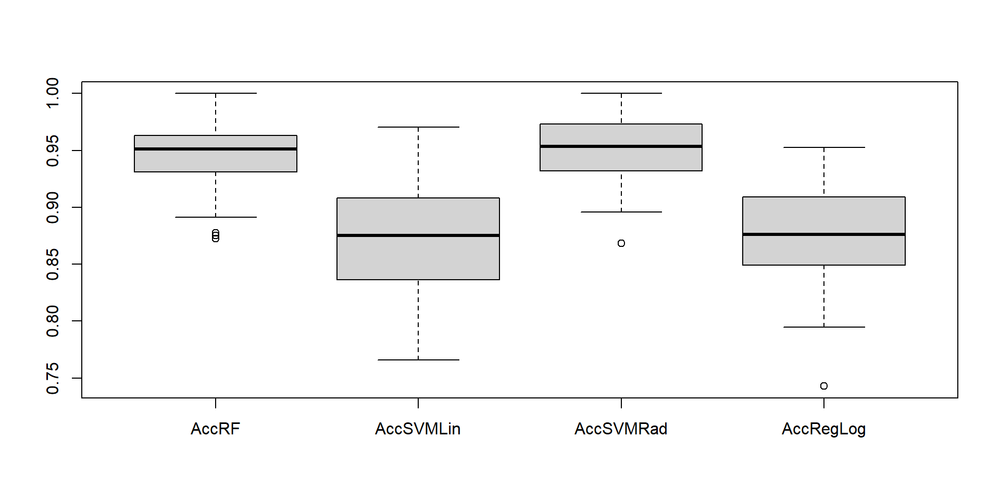

Técnica Random Forest em árvores de decisão
Grupo 4
Introdução
O que é floresta aleatória?
Floresta aleatória é um algoritmo de Machine learning, utilizado para realizar predições, que combina o resultado de múltiplas árvores de decisão criadas aleatoriamente com o objetivo de diminuir a variância e o viés no contexto dos métodos de árvores.
Introdução
Árvore de decisão
Uma árvore de decisão é a forma mais básica entre os métodos baseados em árvore, muito utilizada em regressão e classificação, uma árvore de decisão consiste em segmentar o espaço composto pelas variáveis preditoras em regiões mais simples, nos quais a média (se a variável resposta for quantitativa) é utilizada como valor predito ou (caso categorizado) a classe da variável resposta com maior frequência, os modelos de árvores de decisão são atraentes pela simplicidade e fácil interpretação, contudo não possuem a precisão que outros métodos de classificação ou regressão alcançam.
Vantagens e desvantagens
sobre árvore de decisão:
Vantagens
- São facilmente explicaveis;
- Podem ser representadas graficamente com fácil interpretação;
- Podem manupular preditores qualitativos sem a necessidade de variáveis dummy.
Desvantagens
- Não possuem o mesmo nível de precisão preditiva como outros modelos de regressão e classificação;
- Não são robustas, ou seja, uma pequena mudança nos dados pode gerar uma grande mudança na árvore de estimação final.
Motivação
Uma forma de superar a baixa precisão das árvores de decisão é a utilização de métodos agregadoes que ajustam modelos poderosos, como floresta aleatória, que consegue uma grande melhoria no poder de predição mesmo comparando com outros modelos de classificação.
Procedimento
- Como na técnica bagging, construímos várias árvores a partir das amostras bootstrap do conjunto de testes.
- Na construção de cada árvore, cada vez que uma divisão (ou corte) é considerada para alguma árvore, uma seleção aleatória dos preditores é escolhida como candidatos dos cortes ao invés de todos os preditores como normalmente é feito.
- Essa abordagem tem como propósito reduzir a correlação entre as árvores, reduzindo a variância quando tiramos a média das árvores, já que a média tende a ser menor quando temos menor correlação entre as árvores.
- A escolha do número de preditores que serão selecionados para cada corte, é tipicamente escolhida pela raiz quadrada do número total de preditores.
- Florestas aleatórias fornecem uma melhoria em relação ao método bagging, já que a correlação entre as árvores diminui.
Considerações
De forma geral, pode-se dizer que o procedimento introduz mais aleatoriedade e diversidade no processo de construção em relação ao método bagging.
Intuitivamente, a utilização de florestas aleatórias para tomada de decisão corresponde à síntese da opinião de indivíduos com diferentes fontes de informação.
Em geral, florestas aleatórias produzem resultados menos variáveis em relação ao método bagging, já que nesse método as árvores geradas podem ser muito semelhantes, dependendo de preditores fortes, o que não contribui para redução de variabilidade das predições, o que não acontece com florestas aleatórias.
Rotina
Uma rotina minimalista de classificação via Random Forest em R pode ser executada da seguinte forma:
Call:
randomForest(formula = Species ~ ., data = train, proximity = TRUE)
Type of random forest: classification
Number of trees: 500
No. of variables tried at each split: 2
OOB estimate of error rate: 6.36%
Confusion matrix:
setosa versicolor virginica class.error
setosa 33 0 0 0.00000000
versicolor 0 36 3 0.07692308
virginica 0 4 34 0.10526316Resultados
Podemos acessar os resultados do modelo no objeto rf
Teste do modelo no conjunto de treino:
Confusion Matrix and Statistics
Reference
Prediction setosa versicolor virginica
setosa 33 0 0
versicolor 0 39 0
virginica 0 0 38
Overall Statistics
Accuracy : 1
95% CI : (0.967, 1)
No Information Rate : 0.3545
P-Value [Acc > NIR] : < 2.2e-16
Kappa : 1
Mcnemar's Test P-Value : NA
Statistics by Class:
Class: setosa Class: versicolor Class: virginica
Sensitivity 1.0 1.0000 1.0000
Specificity 1.0 1.0000 1.0000
Pos Pred Value 1.0 1.0000 1.0000
Neg Pred Value 1.0 1.0000 1.0000
Prevalence 0.3 0.3545 0.3455
Detection Rate 0.3 0.3545 0.3455
Detection Prevalence 0.3 0.3545 0.3455
Balanced Accuracy 1.0 1.0000 1.0000Validação do modelo nos dados de teste:
Confusion Matrix and Statistics
Reference
Prediction setosa versicolor virginica
setosa 17 0 0
versicolor 0 10 2
virginica 0 1 10
Overall Statistics
Accuracy : 0.925
95% CI : (0.7961, 0.9843)
No Information Rate : 0.425
P-Value [Acc > NIR] : 3.546e-11
Kappa : 0.8854
Mcnemar's Test P-Value : NA
Statistics by Class:
Class: setosa Class: versicolor Class: virginica
Sensitivity 1.000 0.9091 0.8333
Specificity 1.000 0.9310 0.9643
Pos Pred Value 1.000 0.8333 0.9091
Neg Pred Value 1.000 0.9643 0.9310
Prevalence 0.425 0.2750 0.3000
Detection Rate 0.425 0.2500 0.2500
Detection Prevalence 0.425 0.3000 0.2750
Balanced Accuracy 1.000 0.9201 0.8988Parâmetros
A função randomForest do pacote homônimo tem uma série de parâmetros opcionais além do mínimo obrigatório, que seria o modelo e os dados. O mais importante destes parâmetros é o ntree, que por default é 500 e em geral deve-se utilizar o máximo possível tal que execute em um tempo aceitável. Em geral, o restante dos parâmetros deve ser deixado em default.
Neste caso, o modelo foi extremamente eficiente mesmo na versão minimalista
Fine tuning
Se for o caso, também podemos fazer o fine-tuning dos parâmetros do modelo
Importâncias
Podemos verificar a importância de cada variável para o modelo.
Implementações
Uma rotina de classificação via Random forest poderia ser executada de forma análoga em python da seguinte forma:
import pandas as pd
import numpy as np
from sklearn.model_selection import train_test_split
from sklearn.metrics import confusion_matrix
from sklearn.ensemble import RandomForestClassifier
from sklearn import datasets
iris = datasets.load_iris()
dados = pd.DataFrame(data=iris.data, columns=iris.feature_names)RandomForestClassifier()In a Jupyter environment, please rerun this cell to show the HTML representation or trust the notebook.
On GitHub, the HTML representation is unable to render, please try loading this page with nbviewer.org.
RandomForestClassifier()
array([[16, 0, 0],
[ 0, 13, 2],
[ 0, 0, 14]], dtype=int64)Definições
As árvores podem ser representadas como \(h_1(\boldsymbol x),\; h_2(\boldsymbol x),\; . . . ,\; h_K( \boldsymbol x)\) na forma
\[ \{ h \left( \boldsymbol x, \Theta_k \right), \; \; k = 1, \dots \} \]
onde \(\Theta_k \; \text{i.i.d}\) são vetores aleatórios representando a escolha de \(p\) entre os \(m\) atributos de \(\boldsymbol X\).
Normalmente, \(p \approx \sqrt m\)
Definições
1) A medida em que o número de árvores cresce, a média de acertos se estabiliza e a chance de cometer uma predição errada pode ser quantificada:
\[ P_{\boldsymbol X, Y} \left( P_{\Theta}( h(\boldsymbol X, \Theta) = Y) - P_{\Theta} (h(\boldsymbol X, \Theta) \neq Y) < 0\right) \]
- \(P_{\Theta}( h(\boldsymbol X, \Theta) = Y)\) representa a probabilidade de que uma árvore acerte a predição de Y
Definições
2) A acurácia da random forest vai depender do “poder” de cada um dos classificadores individuais e da dependência entre eles.
Um limite superior para o erro de generalização é dado por
\[PE^* \le -\bar \rho(1 − s^2)/s^2 \]
onde:
\(\boldsymbol s = E_{\boldsymbol X, Y} mr({\boldsymbol X, Y} )\) é o “poder” das árvores \(h(\boldsymbol x, \Theta)\)
\(\bar \rho\) pode ser entendido como a média entre as correlações das árvores.
Exemplo Alzheimer
O dataset DARWIN (https://archive.ics.uci.edu/dataset/732/darwin) contém dados sobre a escrita a mão de pessoas afetadas pelo Alzheimer e de um grupo de controle, totalizando 174 observações. São 450 variáveis e o objetivo é distinguir pessoas afetadas (P) de pessoas saudáveis (H).
No. of variables tried at each split: 21
OOB estimate of error rate: 13.57%
Confusion matrix:
H P class.error
H 58 10 0.1470588
P 9 63 0.1250000 H P class.error
H 58 10 0.1470588
P 8 64 0.1111111[1] "Test error:8.82%"No gráfico abaixo é possível perceber como a escolha do número de variáveis em cada split faz diferença para o resultado final do modelo.

Ainda, podemos verficiar a acurácia do modelo pelo número de árvores:

Robustez a Dados Contaminados
Uma das vantagens das florestas aleatórias é sua robustez a pontos atípicos, ou outliers. O exemplo a seguir demonstra a robustez desses modelos a contaminações, além de compará-los a outros métodos de classificação:
pacman::p_load(randomForest)
pacman::p_load(caret,e1071,VGAM)
iris <- iris %>%
mutate(cor = ifelse(Species == "setosa",1,ifelse(Species == "versicolor",2,3)))
set.seed(150167636)
ind <- sample(2, nrow(iris), replace = TRUE,
prob = c(0.7, 0.3))
train <- iris[ind==1,]
test <- iris[ind==2,]
i=4 #Número de pontos contaminados
dadosPoluidos1 <- train[train$cor==1,]
dadosPoluidos1 <- dadosPoluidos1[sample(1:nrow(dadosPoluidos1),i,replace = F),]
dadosPoluidos2 <- train[train$cor==3,]
dadosPoluidos2 <- dadosPoluidos2[sample(1:nrow(dadosPoluidos2),i,replace = F),]
dadosPoluidos1$Petal.Length <- dadosPoluidos1$Petal.Length + 5
dadosPoluidos1$Petal.Width <- dadosPoluidos1$Petal.Width + 1.7
dadosPoluidos2$Petal.Length <- dadosPoluidos2$Petal.Length - 4
dadosPoluidos2$Petal.Width <- dadosPoluidos2$Petal.Width - 1.2
DadosExempOutTreino <- rbind(train,dadosPoluidos1,dadosPoluidos2)
#DadosExempOutTreino <- DadosExempOutTreino[,-6]Robustez a Dados Contaminados


Robustez a Dados Contaminados
- Random Forest
Confusion Matrix and Statistics
Reference
Prediction setosa versicolor virginica
setosa 17 0 0
versicolor 0 10 2
virginica 0 1 10
Overall Statistics
Accuracy : 0.925
95% CI : (0.7961, 0.9843)
No Information Rate : 0.425
P-Value [Acc > NIR] : 3.546e-11
Kappa : 0.8854
Mcnemar's Test P-Value : NA
Statistics by Class:
Class: setosa Class: versicolor Class: virginica
Sensitivity 1.000 0.9091 0.8333
Specificity 1.000 0.9310 0.9643
Pos Pred Value 1.000 0.8333 0.9091
Neg Pred Value 1.000 0.9643 0.9310
Prevalence 0.425 0.2750 0.3000
Detection Rate 0.425 0.2500 0.2500
Detection Prevalence 0.425 0.3000 0.2750
Balanced Accuracy 1.000 0.9201 0.8988- Regressão logística
Confusion Matrix and Statistics
Reference
Prediction setosa versicolor virginica
setosa 17 0 0
versicolor 0 6 1
virginica 0 5 11
Overall Statistics
Accuracy : 0.85
95% CI : (0.7016, 0.9429)
No Information Rate : 0.425
P-Value [Acc > NIR] : 3.669e-08
Kappa : 0.7697
Mcnemar's Test P-Value : NA
Statistics by Class:
Class: setosa Class: versicolor Class: virginica
Sensitivity 1.000 0.5455 0.9167
Specificity 1.000 0.9655 0.8214
Pos Pred Value 1.000 0.8571 0.6875
Neg Pred Value 1.000 0.8485 0.9583
Prevalence 0.425 0.2750 0.3000
Detection Rate 0.425 0.1500 0.2750
Detection Prevalence 0.425 0.1750 0.4000
Balanced Accuracy 1.000 0.7555 0.8690Robustez a Dados Contaminados
- SVM linear
Confusion Matrix and Statistics
Reference
Prediction setosa versicolor virginica
setosa 17 0 0
versicolor 0 9 1
virginica 0 2 11
Overall Statistics
Accuracy : 0.925
95% CI : (0.7961, 0.9843)
No Information Rate : 0.425
P-Value [Acc > NIR] : 3.546e-11
Kappa : 0.8852
Mcnemar's Test P-Value : NA
Statistics by Class:
Class: setosa Class: versicolor Class: virginica
Sensitivity 1.000 0.8182 0.9167
Specificity 1.000 0.9655 0.9286
Pos Pred Value 1.000 0.9000 0.8462
Neg Pred Value 1.000 0.9333 0.9630
Prevalence 0.425 0.2750 0.3000
Detection Rate 0.425 0.2250 0.2750
Detection Prevalence 0.425 0.2500 0.3250
Balanced Accuracy 1.000 0.8918 0.9226- SVM radial
Confusion Matrix and Statistics
Reference
Prediction setosa versicolor virginica
setosa 17 0 0
versicolor 0 10 1
virginica 0 1 11
Overall Statistics
Accuracy : 0.95
95% CI : (0.8308, 0.9939)
No Information Rate : 0.425
P-Value [Acc > NIR] : 2.026e-12
Kappa : 0.9235
Mcnemar's Test P-Value : NA
Statistics by Class:
Class: setosa Class: versicolor Class: virginica
Sensitivity 1.000 0.9091 0.9167
Specificity 1.000 0.9655 0.9643
Pos Pred Value 1.000 0.9091 0.9167
Neg Pred Value 1.000 0.9655 0.9643
Prevalence 0.425 0.2750 0.3000
Detection Rate 0.425 0.2500 0.2750
Detection Prevalence 0.425 0.2750 0.3000
Balanced Accuracy 1.000 0.9373 0.9405Robustez a Dados Contaminados
Comparando robustez de modelos com observações contaminadas
Sem contaminações
Robustez a Dados Contaminados
2 contaminações

4 contaminações

Robustez a Dados Contaminados
6 contaminações

8 contaminações

Vantagens e desvantagens
sobre classificação por florestas aleatórias:
Vantagens
- Robusto contra overfitting;
- Trabalha bem com dados de alta dimesão;
- Consegue captar relações não-lineares nos dados;
- Fornece uma medida de importância;
- Robusto contra outliers e ruídos;
- Consegue lidar com dados faltantes.
Desvantagens
- Dificil interpretação;
- Não adequado para dados escassos;
- Demora para fazer predições;
- Requer ajuste de hiper-parâmetros.
Referências:
Trevor Hastie, Robert Tibshirani, Gareth M. James, Daniela Witten. An introduction to Statistical Learning. Springer, 2013.
Pedro A. Morettin, Julio M. Singer. Estatística e Ciência de Dados. USP, 2021.
Finnstats. Randon Forest in R. Acessado em junho de 2024. Link: https://www.r-bloggers.com/2021/04/random-forest-in-r/
Breiman, L. Random Forests. Machine Learning 45, 5–32 (2001)
Departamento de estatística - UnB